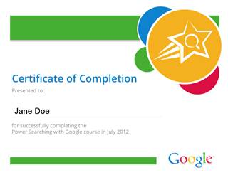

Anuncios
y material opcional
El
contenido del curso oficial que se crea mediante nuestro código experimental
(ver Implementar
Material del curso ) es, por supuesto, una parte importante de la
comunicación formal entre usted y sus estudiantes. Sin embargo, no es la
única comunicación.
En
este sentido, distinguir entre la comunicación formal, típicamente iniciadas
por el personal del curso, desde la comunicación informal foro de la web, a
menudo iniciadas por los estudiantes. Todos estos esfuerzos son
importantes para crear un sentimiento de comunidad para el éxito de sus
estudiantes y su personal por supuesto.
El
tipo de comunicación formal que normalmente vemos son:
Ejemplo
de mensajes de correo electrónico
Los siguientes son los
correos electrónicos utilizados en la búsqueda de energía con campo de Google. Modificar que sean relevantes para su propio curso.
- Una vez registrado (Bienvenido!)
- Dependiendo de la disponibilidad de nuevos
materiales
- Después del curso (post-curso de estudio)
- Al completar con éxito (certificado)
Una
vez registrado (Bienvenido!)
Tema:
Bienvenido a Power Búsqueda con Google!
De:
Potencia de búsqueda de Google personal
<help@example.com>
Cuerpo
del mensaje:
Comience tomando una evaluación pre-curso y
estudiar el material en la primera unidad: http://www.example.com
- Unidad 1 ya
disponible
- Unidad 2 disponible 11 de julio
- Unidad 3 y en mitad del proceso de
evaluación está disponible 12 de julio
- Hangout on Air con expertos en búsquedas 13
de julio 1:00-13:45 PDT ( agregar
al calendario )
Enviar preguntas
a los expertos de búsqueda: http://www.google.com/moderator/YOURMODERATORINSTANCE
- Evaluación de mitad de curso por 17 de julio
a 7:59 am PDT ( agregar al
calendario )
- 4.6 Unidades disponibles 17 hasta 19 julio
- Hangout on Air con expertos en búsquedas 19
de julio 11:00-11:45 am PDT ( agregar
al calendario )
- Evaluación final debido 23 de julio a las
4:59 pm PDT ( agregar al
calendario )
¿Necesitas ayuda? Por favor únase al personal del curso en el foro curso y seguir nuestra página de Google+ para ejercicios adicionales,
consejos y trucos!
Cheers,
La búsqueda de
energía a Personal Curso Google
Preguntas más frecuentes
- ¿Cómo voy a saber que las nuevas unidades están
disponibles?
Usted recibirá
un correo electrónico cuando nuevas unidades están disponibles.
- ¿A qué hora son las evaluaciones de
vencimiento y los lugares de reunión de aire en la bolsa?
Al hacer clic en
"Añadir al calendario" enlace de arriba se abre una entrada de
Google Calendar con la hora correcta en su zona horaria.
- ¿Qué es un Hangout on Air?
A Hangout on Air
utiliza Google+ tecnología para transmitir un evento en vivo a todo el
mundo. Usted puede hacer
preguntas a nuestros expertos en búsqueda con un sitio web (vinculado
arriba) llamado Google Moderator. Nuestros expertos en búsqueda responder a las
preguntas online en este momento. Usted puede ver la transmisión en vivo en nuestra página de Google+.
Usted está recibiendo este correo electrónico
porque se inscribió en el Poder Búsqueda con Google. Para dejar de recibir
correos electrónicos sobre este curso, por favor haga clic aquí , y luego haga clic en "Mi
Suscripción". Seleccione "Sin correo
electrónico".
Dependiendo
de la disponibilidad de nuevos materiales
Tema:
Bienvenido a la Unidad 2!
De:
Potencia de búsqueda de Google personal
<helpexample.com>
Cuerpo
del mensaje:
Bienvenidos a la segunda unidad de alimentación Búsqueda con Google! . Hoy vas a aprender sobre
los diferentes tipos de contenido que se puede buscar a través de Google, así
como la manera de interpretar los resultados que usted recibe.
¿Necesitas ayuda? Por favor únase al personal del curso en el foro curso y seguir nuestra página de Google+ para ejercicios adicionales,
consejos y trucos!
Próximos eventos del curso
- Unidad 3 y en mitad del proceso de
evaluación está disponible 12 de julio
- Hangout on Air con expertos en búsquedas 13
de julio 1:00-13:45 PDT ( agregar
al calendario )
Enviar preguntas
a los expertos de búsqueda: http://www.google.com/moderator/YOURMODERATORURL
- Evaluación de mitad de curso por 17 de julio
a 7:59 am PDT ( agregar al
calendario )
Cheers,
La búsqueda de
energía a Personal Curso Google
Usted está recibiendo este correo electrónico
porque se inscribió en el Poder Búsqueda con Google. Para dejar de recibir
correos electrónicos sobre este curso, por favor haga clic aquí , y luego haga clic en "Mi
Suscripción". Seleccione "Sin correo electrónico".
Después
del curso (post-curso de estudio)
Tema:
Buscando Potencia: Proporcione retroalimentación
De:
Potencia de búsqueda de Google personal
<helpexample.com>
Cuerpo
del mensaje:
Nos gustaría conocer su opinión sobre el curso de
energía Búsqueda con Google para la que se registro. Incluso si usted no ha
completado el curso, estamos interesados en sus opiniones. Por favor, dedique un momento a responder a algunas
preguntas anónimas para nosotros en este enlace:
https://docs.google.com/spreadsheet/viewform?formkey=YOURFORMKEY
¡Gracias!
Poder realizar
búsquedas con Google Curso de Estado Mayor
Al
completar con éxito (certificado)
Tema:
Poder buscar en Google certificado
De:
Potencia de búsqueda de Google personal
<help@example.com>
Cuerpo
del mensaje:
¡Felicitaciones! Aquí está el certificado
que ha ganado a través de su participación en el Poder Búsqueda con Google. A continuación se presentan los resultados de la
evaluación.
Evaluación de mitad de curso puntuación: 100%
Post-curso de
evaluación puntuación: 100%
Usted puede imprimir el certificado adjunto y
colgarlo en la pared. Esperamos que hayan
disfrutado el curso!
Cheers,
Poder realizar
búsquedas con Google personal del curso
Tipo
|
Aplicación
típica
|
Ejemplos
|
|
Anuncios
recordatorios
|
Correo
electrónico, copia de seguridad en la ficha Anuncios
|
Plazos
para las evaluaciones. Lanzamiento de nuevas unidades. Ver Anuncios de sólo lista de correo electrónico para obtener información sobre la configuración
de correo electrónico y la lista de anuncios Tab Anuncios actualización para obtener información sobre la ficha.
|
|
Anuncios
informativos
|
Web
mensaje en el foro, copia de seguridad de la ficha Anuncios
|
Una
respuesta estándar a una pregunta que surgió reiteradamente en cualquier
comunicación de los estudiantes. (Por ejemplo, si la redacción de una
pregunta actividad confundido a muchos estudiantes, es posible que decida
publicar una aclaración.) Véase el diálogo comunitario para obtener información sobre la creación
de un foro de Internet y Tab Anuncios actualización para obtener información sobre la ficha.
|
|
Material
del curso opcional
|
Web
mensaje en el foro, página Google+ o mensaje Blog
|
Lectura
de la Biblia para los estudiantes que podrían necesitar un poco de ayuda para
empezar. Un poco de material fuera de tema o más avanzado para los
estudiantes que quieran explorar los aspectos del tema no se tratan en las
principales materias o que deseen actividades más desafiantes para reforzar
su conocimiento de los materiales principales.
|
Ejemplo
de mensajes de correo electrónico
Los siguientes son los
correos electrónicos utilizados en la búsqueda de energía con campo de Google. Modificar que sean relevantes para su propio curso.
- Una vez registrado (Bienvenido!)
- Dependiendo de la disponibilidad de nuevos
materiales
- Después del curso (post-curso de estudio)
- Al completar con éxito (certificado)
Una
vez registrado (Bienvenido!)
Tema:
Bienvenido a Power Búsqueda con Google!
De:
Potencia de búsqueda de Google personal
<help@example.com>
Cuerpo
del mensaje:
Comience tomando una evaluación pre-curso y
estudiar el material en la primera unidad: http://www.example.com
- Unidad 1 ya
disponible
- Unidad 2 disponible 11 de julio
- Unidad 3 y en mitad del proceso de evaluación
está disponible 12 de julio
- Hangout on Air con expertos en búsquedas 13 de
julio 1:00-13:45 PDT ( agregar
al calendario )
Enviar preguntas a
los expertos de búsqueda: http://www.google.com/moderator/YOURMODERATORINSTANCE
- Evaluación de mitad de curso por 17 de julio a
7:59 am PDT ( agregar al
calendario )
- 4.6 Unidades disponibles 17 hasta 19 julio
- Hangout on Air con expertos en búsquedas 19 de
julio 11:00-11:45 am PDT ( agregar
al calendario )
- Evaluación final debido 23 de julio a las 4:59
pm PDT ( agregar al
calendario )
¿Necesitas ayuda? Por favor únase al personal del curso en el foro curso y seguir nuestra página de Google+ para ejercicios adicionales, consejos
y trucos!
Cheers,
La búsqueda de energía
a Personal Curso Google
Preguntas más frecuentes
- ¿Cómo voy a saber que las nuevas unidades
están disponibles?
Usted recibirá un
correo electrónico cuando nuevas unidades están disponibles.
- ¿A qué hora son las evaluaciones de
vencimiento y los lugares de reunión de aire en la bolsa?
Al hacer clic en
"Añadir al calendario" enlace de arriba se abre una entrada de
Google Calendar con la hora correcta en su zona horaria.
- ¿Qué es un Hangout on Air?
A Hangout on Air
utiliza Google+ tecnología para transmitir un evento en vivo a todo el
mundo. Usted puede hacer
preguntas a nuestros expertos en búsqueda con un sitio web (vinculado
arriba) llamado Google Moderator. Nuestros expertos en
búsqueda responder a las preguntas online en este momento. Usted puede ver la transmisión en vivo en nuestra página de Google+.
Usted está recibiendo este correo electrónico
porque se inscribió en el Poder Búsqueda con Google. Para dejar de recibir correos electrónicos sobre este
curso, por favor haga clic aquí , y luego haga clic en "Mi
Suscripción". Seleccione "Sin correo
electrónico".
Dependiendo
de la disponibilidad de nuevos materiales
Tema:
Bienvenido a la Unidad 2!
De:
Potencia de búsqueda de Google personal
<helpexample.com>
Cuerpo
del mensaje:
Bienvenidos a la segunda unidad de alimentación Búsqueda con Google! . Hoy vas a aprender sobre los
diferentes tipos de contenido que se puede buscar a través de Google, así como
la manera de interpretar los resultados que usted recibe.
¿Necesitas ayuda? Por favor únase al personal del curso en el foro curso y seguir nuestra página de Google+ para ejercicios adicionales, consejos
y trucos!
Próximos eventos del curso
- Unidad 3 y en mitad del proceso de evaluación
está disponible 12 de julio
- Hangout on Air con expertos en búsquedas 13 de
julio 1:00-13:45 PDT ( agregar
al calendario )
Enviar preguntas a
los expertos de búsqueda: http://www.google.com/moderator/YOURMODERATORURL
- Evaluación de mitad de curso por 17 de julio a
7:59 am PDT ( agregar al
calendario )
Cheers,
La búsqueda de energía
a Personal Curso Google
Usted está recibiendo este correo electrónico
porque se inscribió en el Poder Búsqueda con Google. Para dejar de recibir correos electrónicos sobre este
curso, por favor haga clic aquí , y luego haga clic en "Mi
Suscripción". Seleccione "Sin correo electrónico".
Después
del curso (post-curso de estudio)
Tema:
Buscando Potencia: Proporcione retroalimentación
De:
Potencia de búsqueda de Google personal
<helpexample.com>
Cuerpo
del mensaje:
Nos gustaría conocer su opinión sobre el curso de
energía Búsqueda con Google para la que se registro. Incluso si usted no ha completado el curso, estamos
interesados en sus opiniones. Por favor, dedique un momento a responder a algunas
preguntas anónimas para nosotros en este enlace:
https://docs.google.com/spreadsheet/viewform?formkey=YOURFORMKEY
¡Gracias!
Poder realizar
búsquedas con Google Curso de Estado Mayor
Al
completar con éxito (certificado)
Tema:
Poder buscar en Google certificado
De:
Potencia de búsqueda de Google personal
<help@example.com>
Cuerpo
del mensaje:
¡Felicitaciones! Aquí está el certificado que
ha ganado a través de su participación en el Poder Búsqueda con Google. A continuación se presentan los resultados de la
evaluación.
Evaluación de mitad de curso puntuación: 100%
Post-curso de evaluación
puntuación: 100%
Usted puede imprimir el certificado adjunto y
colgarlo en la pared. Esperamos que hayan
disfrutado el curso!
Cheers,
Poder realizar
búsquedas con Google personal del curso

Hay
una gran variedad de tecnologías disponibles para cada uno de estos tipos de
comunicación. Lo que usted elige utilizar depende de sus circunstancias. Lo
que describimos a continuación son las decisiones que tomamos para la búsqueda
de energía.
Anuncios recordatorios
Usted
puede optar por enviar anuncios de recordatorio a los estudiantes en los puntos
importantes en el camino. Considere la posibilidad de enviar los avisos
recordatorios siguientes:
En la inscripción en el curso
Deje que los estudiantes saben que su registro se ha procesado e incluir
una breve descripción del curso, el programa de alto nivel para el curso,
una introducción a las características de la comunidad disponibles para
los estudiantes, y así sucesivamente.Cada vez que suelte el contenido nuevo
Enlace a los nuevos contenidos y mencionar los plazos siguientes.A mitad, a los estudiantes que se han
registrado pero no se ha iniciado el curso
Esto se suma a los correos electrónicos regulares anunciando el
lanzamiento de nuevos contenidos. A veces los estudiantes se
inscriben y luego se olvide de iniciar el curso. A mitad del curso,
enviar sólo a estas personas un recordatorio de que puede ser que desee
iniciar.Antes de que un evento especial
Por ejemplo, si usted tiene horas de oficina en línea utilizando un Hangout On Air, envíe un
mensaje de recordatorio poco antes de que ocurra.Tras la presentación de la evaluación final
La notificación de si el estudiante ha pasado y cuándo esperar el
certificado (si lo hay).
Lo
que los anuncios de recordatorio de que decida enviar, le recomendamos que les
redactar con antelación. Ver mensajes de correo electrónico de ejemplo para algunas muestras.
Durante Poder Búsqueda con Google , hemos observado un aumento significativo en la
participación de los estudiantes cada vez que enviamos avisos recordatorios, lo
cual nos hizo utilizando el correo electrónico. Decidimos utilizar el
correo electrónico porque los estudiantes tienen más probabilidades (aunque no
se garantiza) para ver los mensajes de correo electrónico que ver las cosas
publicadas por otros medios.
Consejo: Utilice otros mecanismos, como tu página de
Google+ o en su foro, los anuncios y menos importantes para los avisos
informativos. Si decide no utilizar el correo electrónico, utilice uno de
los mecanismos de todos los anuncios.
Ver Anuncios de sólo lista de correo electrónico para obtener información sobre la
configuración de lista de anuncios de correo electrónico.
Anuncios
informativos
Durante
el curso, es posible que desee dejar que sus alumnos saben algo que es opcional
o que de otra manera no creo que vale la pena enviar a todas sus cuentas de correo
electrónico.
Considerar
la creación de una categoría de nivel superior avisos en tu foro. El uso
que enviar actualizaciones diarias, preguntas frecuentes, etc.
Por
ejemplo, puede recibir la misma pregunta de muchos estudiantes, a través de una
variedad de mecanismos de comunicación. Al principio, es probable que
responder a estas preguntas de una en una, en cualquier lugar se hizo la
pregunta. Una vez que se observa la tendencia, sin embargo, es posible que
desee crear una respuesta estándar a esta pregunta, publicarlo en un lugar, y
eliminar duplicados para evitar confusiones.
A
pesar de responder a una pregunta estándar puede ser considerado como un
anuncio formal, tratándolo de una manera más informal es apropiado. Le
sugerimos utilizar el foro
de la web para
este fin.
Como
se puede ver en la
página , si utiliza un mensaje en el foro para estos
anuncios, usted puede marcar los duplicados de la cuestión de la entrada
respuestas y reducir el ruido en su foro.
Material del curso opcional
Las
lecciones , actividades y evaluaciones contener su material del curso principal. Sin
embargo, usted puede tener material opcional puede sugerir para algunos
estudiantes. Por ejemplo, puede hacer que la lectura de fondo para
estudiantes que necesitan un poco de ayuda extra para empezar. Usted puede
tener el material más avanzado para los estudiantes que desean actividades más
desafiantes para reforzar su conocimiento de los materiales principales. Usted
puede tener material sobre los aspectos del tema que no están cubiertos en
absoluto en las materias principales para los estudiantes que desean explorar
más.
Usted
tiene varias opciones para crear su material opcional, dependiendo de sus
objetivos para ello.
Para
opcionales, más difíciles, actividades, usted puede optar por publicar de
inmediato a su foro web. La ventaja de este enfoque es que se puede animar
a sus estudiantes a enviar sus respuestas y discutir las respuestas entre
ellos.
Para
el material de fondo o de material en material relacionado, pero no primario,
usted puede optar por crear blogs y entradas en su página de Google+. Además,
si utiliza Hangouts
On Air en
tu curso, puedes publicar aquellos en su página de Google+ como una manera
fácil para sus estudiantes acceder a ellos.
Incluso
si usted guarda el foro web para su curso privado de sus estudiantes
registrados, es posible que tenga una página de Google+ o blog que está a
disposición de un público más amplio. Puedes usarlos como medios para que
todos sepan lo que es un gran curso que has creado.
Incluso
puede crear una página de Google+ explícitamente para su curso. Considere
la posibilidad de crear
una página de Google+ para
tu curso antes de soltar el curso.